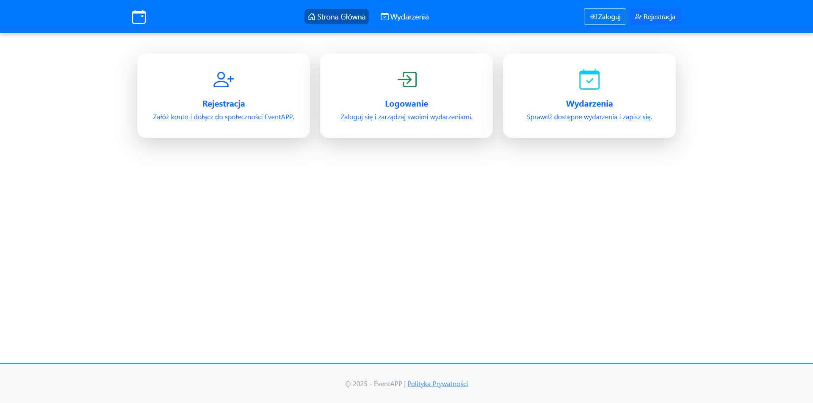

EventManager to aplikacja webowa do zarządzania wydarzeniami, użytkownikami i zapisami. Obsługuje różne poziomy dostępu i oferuje panel administracyjny oraz statystyki.
EventManager to autorska aplikacja webowa zaprojektowana z myślą o kompleksowym zarządzaniu wydarzeniami — od tworzenia i edycji eventów, przez zapisy użytkowników, po analizę statystyk i obsługę ról. System powstał z potrzeby stworzenia narzędzia, które będzie bardziej elastyczne niż standardowe formularze wydarzeń.
Aplikacja obsługuje cztery poziomy dostępu: Administratora, Organizatora, Moderatora oraz Użytkownika. Każda z ról ma przypisane odpowiednie uprawnienia, co pozwala lepiej zarządzać procesem organizacji i udziału w wydarzeniach. Od założenia konta, przez tworzenie eventów, aż po zarządzanie uczestnikami – wszystko działa w jednym spójnym systemie.
Backend systemu został zbudowany w technologii ASP.NET Core z wykorzystaniem wzorca MVC oraz Entity Framework Core. Uwierzytelnianie oparte jest o Microsoft Identity, a dane przechowywane są w SQL Serverze. Frontend przygotowany został w klasycznym stylu Razor/MVC z zachowaniem czytelności i skalowalności kodu.
Projekt ten traktuję jako solidną bazę do dalszego rozwoju – możliwą do wykorzystania w realnych scenariuszach, takich jak organizacja szkoleń, konferencji czy eventów firmowych. Najważniejsza dla mnie była logika ról oraz poprawna struktura danych – bo od tego zaczyna się każdy porządny system.
Główne okno
